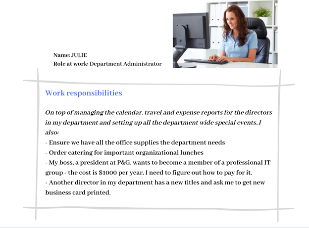
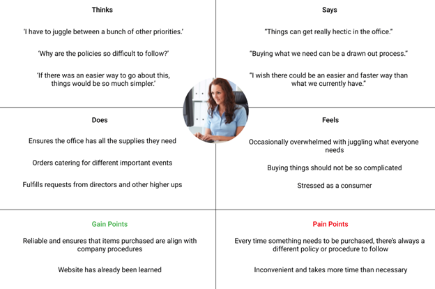
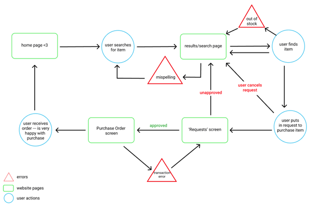

Makeathon Design Competition
The Process:
Understanding the Client
Our first step in taking on this challenge was to understand the philosophy and history of our client to gain a better understanding of their needs. In our research, we found that P&G is a multinational consumer goods corporation that was founded all the way back in 1837. In fact, from 1857 to 1858, the American Civil War helped increase P&G Sales with the purchase of inexpensive soaps and candles. Today there are an estimated amount of 92,000 employees that operate in almost 70 countries, and is ranked 42 on the 2018 Fortune 500 list. Some popular brands owned by P&G include Tide, Old Spice, Olay, Crest, and Febreze.
Defining the Problem
In order to solve a problem, you first need to understand the problem entirely before coming up with solutions. This is why we first decided to craft a problem statement to help frame the design thinking process. Our problem statement was “How can we improve the visual appearance of Coupa while also improving functionality and usability?” We also found through using the old procurement system that it had many problems...
Now that we understood the problem at hand, we continued onto making a persona.
Creating a Persona
Personas are incredibly important to actually getting into the shoes of the user and what their needs are. Based on our observations during the problem identification phase, we came up with the following persona.

Creating an Empathy Map
The aim of our Empathy Map was to identify what our persona thinks, feels, says, and does. By identifying these attributes we discovered new problems and emphasized the problems we already found. The pain and gain points sum these up and help frame what to keep and what to change.

Creating a User Flow
The user flow that we created helped lay out the interactions that a typical used would go through when using the procurement system. This helped us understand the order of operations in a sense, which carries into our prototype.

The Prototype
If you would like to see our prototype, please use the link to our Figma project below.
Figma Prototype
What We Learned
Throughout this process we learned that sticking to the double diamond model of design and truly being iterative in our process helped us win the competition. Furthermore, we wanted to design a product that not only met the needs of the users, but also emphasized usability, aesthetics, and familiarity. By maintaining familiarity in our design, it made it easier for users of the old system to migrate to our design without a huge a learning curve.
Check out this article here on when we won the competition.